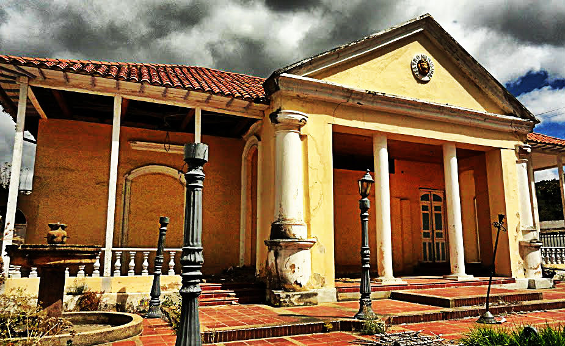

Su nombre honra a Carlos Arturo Torres Peña, reconocido escritor, periodista, diplomático y pensador nacido en el municipio. La casa de la cultura fue creada para promover el arte, la historia, la literatura y las tradiciones culturales de la comunidad. En este lugar se realizan actividades culturales, exposiciones, eventos artísticos, talleres y presentaciones relacionadas con la identidad histórica y cultural de Santa Rosa de Viterbo. También funciona como espacio de encuentro para jóvenes, artistas y visitantes interesados en conocer la cultura del municipio.